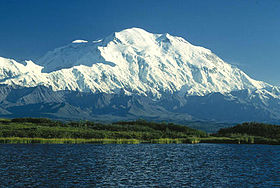
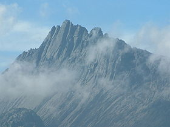

Les sept sommets (Seven Summits en anglais) sont les montagnes les plus élevées de chacun des sept continents. En atteindre le sommet est considéré comme un défi de l'alpinisme.
| Sommet | Élévation (m) | Continent | Massif | Pays | image |
|---|---|---|---|---|---|
| Everest | 8 848 | Asie | Himalaya | Népal, Chine | |
| Aconcagua | 6 962 | Amérique du Sud | Cordillère des Andes | Argentine | |
| Denali (mont McKinley) | 6 190 | Amérique du Nord | Chaîne d'Alaska | États-Unis |  |
| Massif Vinson | 4 892 | Antarctique | Monts Ellsworth | revendiqué par le Chili | |
| Puncak Jaya (Pyramide Carstensz) | 4 884 | Océanie | Monts Maoke | Indonésie |  |
| Mont Kosciuszko | 2 228 | Sous-continent australien | Cordillère australienne | Australie | |